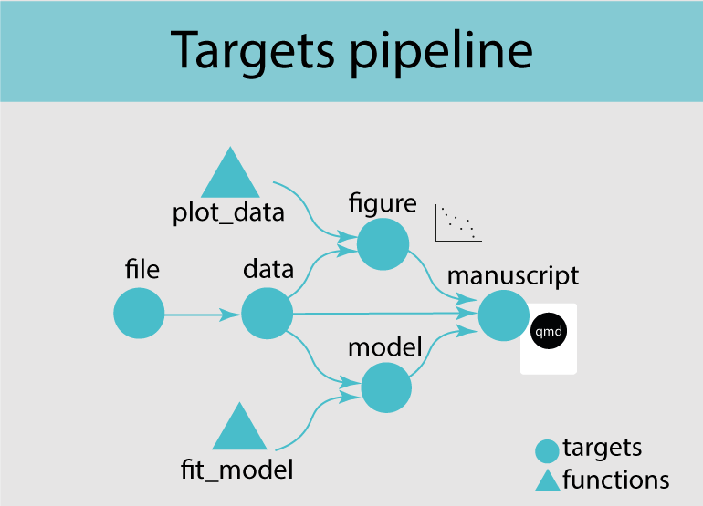

#install.packages("usethis") # if you don't have it already.
usethis::use_course("biostats-r/svalbardQuartoDemo")3 Getting started with targets
In this chapter, you will
- learn the basic targets workflow
- build your own targets pipeline
In this chapter we will go through the basic workflow of a targets pipeline and discuss its main elements, and how to run it. We will use plant trait data from Svalbard. Follow the instructions below to download a the repo.
Exercise
To download the R project containing the data, the code and the qmd file, run:
Then follow the instructions. This will open the svalbardQuartoDemo Rstudio project.
Open the svalbard_traits_targets.qmd file and render it. Check the htlm output and try to understand what each part of the code is doing.
3.1 Introduction to targets
Targets is a pipeline tool, which coordinates the different steps in data science i R. It takes care of dependencies in the code and keeps track of outdated objects.
A targets pipeline consists of different steps, such as importing data, running an analysis or making a figure (Figure 3.1). Each step in the pipeline is a target and can for example be a data frame, a model or a figure. A target is basically an R object in memory. It is created by a piece of code, often this is a function. A pipeline has a main script that puts all the pieces of code together and takes care of dependencies and keeping track of changes.
This concept should sound familiar to you after reading the previous chapter on abstraction.

Definitions
- pipeline tool - coordinates different steps of data science
- target - an R object in memory
- function - self contained modules of code that accomplish a specific task
Let’s have a look at the targets pipeline.
3.2 The targets pipeline
3.2.1 The file structure
A target workflow has a specific file structure including R code, functions, qmd files, data and a _targets.R file (Figure 3.2). The _targets.R file is mandatory and the most important file defining the targets pipeline. This file lives at the root of the R project folder.

An R project has many other files and it is recommended to keep code and data files in separate folders to keep the repository tidy. It is common to have one or several scripts that contain custom user-defined functions. These scripts should be stored in one folder. In this example we will call the folder R: R/functions.R.
To set up this file structure in an RStudio project, use the use_targets() function, which creates an initial _targets.R script with comments to help you populate the script. Note that it also creates a couple of other files, one of which is called run.R. This is a helper script to run the pipeline and will be explained later.
Exercise
Go to the Svalbard trait project and load the targets library library(targets). Then start to set up a targets pipeline by using the use_targets() function.
3.2.2 The _target.R file
The _targets.R file is the main script and configures and defines the pipeline. This file is mandatory and without it the targets pipeline will not work. When using the use_targets() function, it sets up the basic structure and comments to help fill out the rest (see below).
# Created by use_targets().
# Follow the comments below to fill in this target script.
# Then follow the manual to check and run the pipeline:
# https://books.ropensci.org/targets/walkthrough.html#inspect-the-pipeline # nolint
# Load packages required to define the pipeline:
library(targets)
# library(tarchetypes) # Load other packages as needed. # nolint
# Set target options:
tar_option_set(
packages = c("tibble"), # packages that your targets need to run
format = "rds" # default storage format
# Set other options as needed.
)
# tar_make_clustermq() configuration (okay to leave alone):
options(clustermq.scheduler = "multicore")
# tar_make_future() configuration (okay to leave alone):
# Install packages {{future}}, {{future.callr}}, and {{future.batchtools}} to allow use_targets() to configure tar_make_future() options.
# Run the R scripts in the R/ folder with your custom functions:
tar_source()
# source("other_functions.R") # Source other scripts as needed. # nolint
# Replace the target list below with your own:
list(
tar_target(
name = data,
command = tibble(x = rnorm(100), y = rnorm(100))
# format = "feather" # efficient storage of large data frames # nolint
),
tar_target(
name = model,
command = coefficients(lm(y ~ x, data = data))
)
)Have a look at your _targets.R file.
Exercise
Open the _targets.R in your repo and have a look at your _targets.R file.
The _targets.R file has three main components. Note that the file also contains other options which are optional. Let’s go through each component step by step.
tar_option_set()sets all options such as load necessary packages or defining the output format. The argumentpackageshould have a list of all the required packages that are needed to run the pipeline. Note thattargetsandtarchetypesneed to be loaded first and outside this function, otherwise the pipeline will not work. If your pipeline includes a quarto file, the packages that are only used in a quarto file can be loaded directly in there and do not need to be loaded in the_targets.Rfile. The argumentformatlet’s you define default storage format.
# Load packages required to define the pipeline:
library(targets)
library(tarchetypes) # Load other packages as needed.
# Set target options:
tar_option_set(
packages = c("tibble"), # packages that your targets need to run
format = "rds" # default storage format
# Set other options as needed.
)- The function
tar_source()will source all the R scripts in theR/folder.
# Run the R scripts in the R/ folder with your custom functions:
tar_source()
# source("other_functions.R") # Source other scripts as needed. # nolint- The last section makes a list of targets which is the pipeline. Each target is a step in the pipeline, for example importing data, run an analysis or make a figure and looks like a normal R object (e.g. tibble, vector, figure). Each target is declared by the
tar_target()function and separated by a comma. Thetar_target()needs two arguments:namedefines the target name andcommandthe code to produce the target. This can be a couple of lines of code or calling a function.
Here is a target that uses the function fit_model() that was created in the previous chapter to run a linear regression.
# fit model for plant height
list(
tar_target(name = model,
command = fit_model(data))
)Each target should have a unique name can be called downstream in the pipeline. The pipeline will figure out the order of which step depends on which other steps by iteslf.
Once the pipeline has run, the targets are stored in _targets/objects/. All targets can be reproduced using tar_load() and the pipeline does not need rerunning each time before accessing the targets. This is a huge advantage of the targets pipeline and can save a lot of time. To access all the targets at once. use tar_load_everything(). In tar_load() you can also use tidy select commands to load specific targets, e.g. tar_load(starts_with("y"))
Targets names
Targets names should be unique (no duplicates), should not start with a dot and the name should be meaningful (do not use my_variable).
Data files are special targets, because they also need the argument format to declare that this target is a file. Each time the pipeline is run, targetes will check if the file has been changed and if this is the case automatically import the data again the next time the pipeline is run.
list(
tar_target(name = file,
command = "data/PFTC4_Svalbard_2018_ITEX_Traits.csv",
format = "file")
)
How many targets should I make?
A target should do one thing only (e.g. make a figure) and if a functions gets too long, it can be split into nested sub-functions to make the code readable and easier to maintain. Keep the number of targets manageable, which means keep a balance between the amount of code that goes in one target and the number of targets.
3.2.3 Populate the _target.R file
The next step is to populating the _targets.R file. We need to set the options, make custom R functions, and define the pipeline.
Let’s get started.
First, we need to add all R packages to the tar_option_set() function in the _targets.R file that are needed to run the pipeline.
Exercise
Open your _targets.R file. Check the first code block in the svalbard_trait.qmd file in your repo to see which R packages that have been used.
Add both R packages to tar_option_set().
# Set target options:
tar_option_set(
packages = c("tidyverse") # packages that your targets need to run
)The next step is to make a function that runs a linear model.
Exercise
Create a new R file called functions.R and save it in a new folder called R.
Make a function that runs a linear model.
The code for this exercise is in the previous chapter.
fit_model <- function(data, response, predictor){
mod <- lm(response ~ predictor, data = data)
mod
}The last step is to set up the targets pipeline. Our pipeline should have four steps:
define the data file
import the data and filter for the desired species and trait
use our custom function created above to run a linear model testing the effect of a warming treatment on plant height in Bistorta vivipara
make a figure that shows Bistorta vivipara height for control and warming treatment.
Let’s do this step by step.
Exercise
Define the data file
Open the _targets.R file and go to the list of targets.
Use tar_targets() to define each target. The first argument is name, for example file. The second argument is command, which in our case is the path to the data file. Because this target is a file, we also need a third argument format = "file".
Replace path with the relative path to the data file in your repo.
list(
tar_target(name = file,
command = path,
format = "file")
)The next step is to import and filter the data.
Exercise
Import and filter the data
In the _targets.R file add a new target using tar_targets(), separated by a comma.
This time we can give it the name bistorta to keep it consistent with the svalbard_trait.qmd file. Second for the command we need code to import and filter the data. All the code you need is in the svalbard_trait.qmd.
Note that in the previous target we have already defined the data file and it is now called file. Because file is a target we can use it directly and do not have to use the path to the data file again.
Add code to filter for Bistorta vivipapara and the trait plant height.
list(
tar_target(name = bistorta,
command = read_csv(file) |>
filter())
)The next step in the pipeline is to run the model.
Exercise
Run model
Add a new target in the _targets.R file.
Use mode_height for the name. The command is the function fit_model() we created previously. The function has three arguments: data, response and predictor.
list(
tar_target(name = mod_height,
command = fit_model(data = bistorta,
response = Value,
predictor = Treatment))
)The final step is to make a figure.
Exercise
Make figure
Add a new target in the _targets.R file.
Use fig_height for the name. The command is code that produces a figure. We can copy the code from the svalbard_tratis.qmd script.
list(
tar_target(name = fig_height,
command = ggplot(bistorta, aes(x = Treatment, y = Value)) +
geom_boxplot(fill = c("grey80", "red")) +
labs(x = "Treatment", y = "Plant height (cm)"))
)Well done, you have just set up your first target pipeline. Have a treat 🥕!
Do it step by step
Targets plans can become huge and complex. Start small, create a few targets and functions and make the plan running. Then add new code in small steps and check regularly if the plan is still working This will help to understand and solve errors (see trouble shooting section).

3.2.4 Inspect and run the pipeline
We are now ready to inspect the pipeline, check for errors and run it. Use tar_manifest() to check for errors. This function lists useful information about each target, let you know if you are missing a R package and check for missing or duplicate targets (Figure 3.4).

Exercise
Run the tar_manifest() function to check if the pipeline is properly set up. If there are errors fix them.
Now we are ready to run the pipeline. For this open the run.R script and run the tar_make() function. This function looks for the _targets.R in the working directory and runs the pipeline.
When running the pipeline for the first time you will see a list of all the targets that are built (Figure 3.5). This is indicated by start target and build target. Once the pipeline has run, it will always skip the targets that have not changed and are up to date and only run the once that need updating. In the long run this will save a lot of computational time and is one of the big advantages of using targets pipelines.

Exercise
Open the run.R script and run the pipeline. Hopefully, everything will run smoothly 🤞! If not check out the Trouble shooting section below.
Run the pipeline again and check if the targets that are already built are skipped.
Change something in your pipeline and run it again and see what happens. You can for example change the name of a target and see if it is updated when running the pipeline again.
3.2.5 Output files
The results and figures of an analysis are usually presented in a report or presentation or both. One or several output files, such as a quarto document can be added to a targets pipeline. The targets that have been produced in the pipeline can be loaded and used in the quarto document, for example a figure.
To add the quarto document to the pipeline, the manuscript has to be rendered. This is done in _targets.R file in the list of targets using tar_quarto().
# render ms
tar_quarto(name = manuscript, path = "traits_quarto_template.qmd")
Exercise
We have prepared a quarto template file. Add this output file traits_quarto_template.qmd to the pipeline in the _targets.R using tar_quarto() as shown above.
The targets that are used in the quarto document need to be loaded into the current environment. For this we can use tar_load() or tar_read(). The first function is used when a target is used several times. tar_read() is useful if a target is only needed once, e.g. to show a figure. Once the target is loaded, it can be printed.
# print model output
tar_read(mod_height)
tidy(mod_height)All R packages that are needed to run the quarto file need to be loaded in the .qmd file. If you are using a R package exclusively in the quarto script, the package can be loaded only in the quarto file, and does not need to be added to the _target.R file. targets and tarchetypes always need to be loaded in both files.
The last step is to prepare the .qmd file, so that it displays the figure.
Exercise
Prepare the traits_quarto_template.qmd file
In this output file, we want to show the figure displaying plant height in control vs. warmed plots. For this, you need to load the target for the figure into the environment. Because we will use the figure only once you can use tar_read(fig_height).
tar_read(fig_height)
fig_heightRender the file with the Render button on top of the script to check if the code is good. If it runs smoothly, run the pipeline again and check the traits_quarto_template.html output file.
3.3 Trouble shooting
3.3.1 Vizualise the pipeline
If something goes wrong, a good place to start is to visualize your pipeline. The tar_visnetwork() function shows the dependency graph of the pipeline. Circles are targets, triangles functions, and the colour indicates if the targets are up to date or not.

3.3.2 Object not found
A common error is to call a target that does not exist. When running the pipeline this error will appear (Figure 3.7). This is usually if the name is spelled wrong or when using an old name.

3.3.3 Duplicate target
Another common mistake is to use the same name for two different targets (Figure 3.8). This is common when copy pasting code. Rename one of the objects and the problem is solved.

Exercise
If you have problems getting the target pipeline running, here is a working example that you can download or check online. Note that you need to have all the packages that are required for the targets pipeline to run installed.
#install.packages("usethis") # if you don't have it already.
usethis::use_course("biostats-r/targets_workflow_svalbard")3.4 Resources
- The target manual contains everything you need to know
- Here is a large and working target plan
- Here is a short introduction video